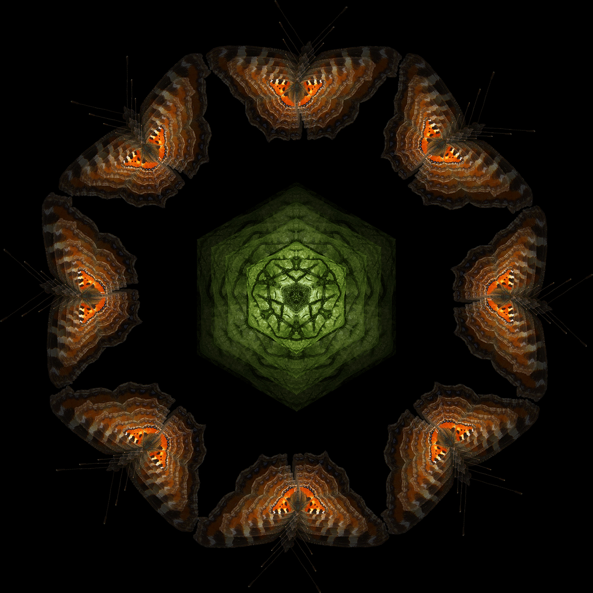

Fragile Legs, 2021
The cellar spider mandala is a playfully ambiguous work that lends an attractive appearance to the spiders that are often described as unsightly animals.

Die großen Schneider/The Big Tailors, 2020 - ongoing
The depiction of these moths has a glorifying character and is an allusion to the importance of their role within the various ecosystems.


Eairth, 2016
A free interpretation of the elements earth and air in a balanced composition.
